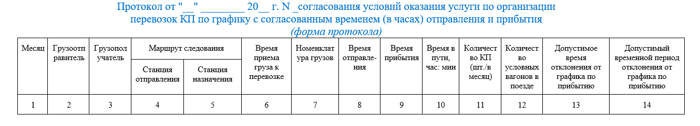

услуга перевозки груза по расписанию — транспортные услуги по перемещению грузов посредством железнодорожного транспорта от грузоотправителя к грузополучателю в строго установленное время отправления и прибытия поезда с данным грузом на железнодорожные станции.
Условия оказания услуги по организации перевозок контейнерным поездом (КП) по графику с согласованным временем (в часах) отправления и прибытия оформляются Сторонами Протоколом согласования условий оказания услуги по организации перевозок КП по графику с согласованным временем (в часах) отправления и прибытия.
Временем окончания оказания Услуги перевозки КП по графику считается дата и время прибытия КП на станцию назначения.
Прибытие КП на станцию назначения по Графику отправления контейнерных поездов или по месячному графику — «наряд-заказу» (в случае присоединения Клиента к Соглашению об оказании информационных услуг в сфере грузовых перевозок, утвержденному распоряжением ОАО «РЖД» от 18.12.2017 № 2633р) считается состоявшимся в срок в случае прибытия КП с отклонением, не превышающим значение допустимого временного периода отклонения, указанного в Протоколе.
